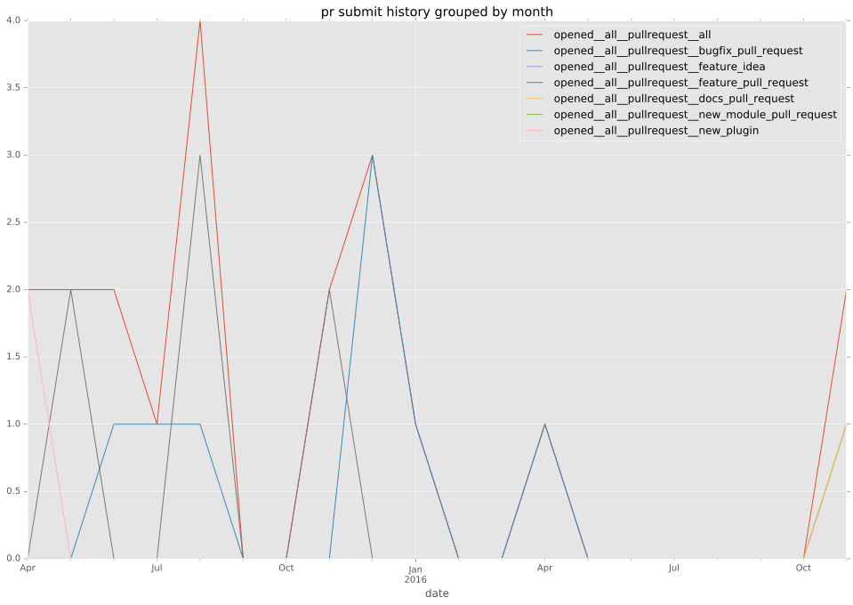
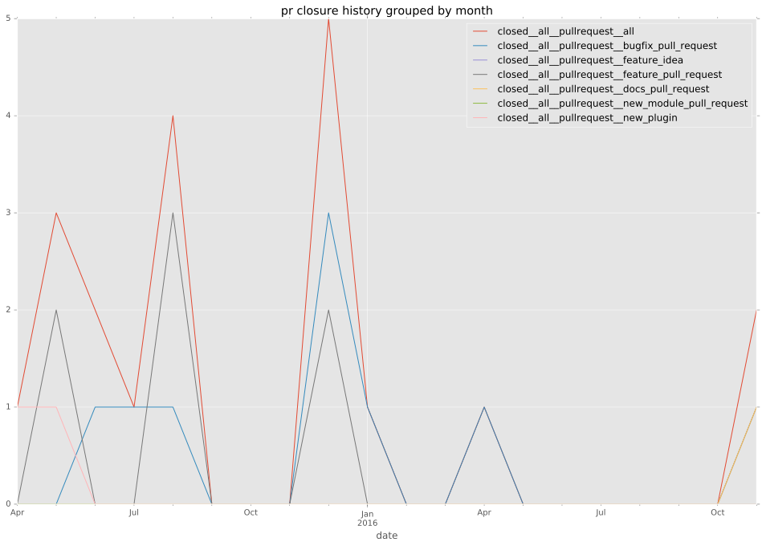

authors
- resmo
maintainers
- resmo
- dazworrall
contributors
- abadger : 1 commits
- ypid : 1 commits
- bcoca : 1 commits
- milamberspace : 2 commits
- resmo : 249 commits
- DazWorrall : 26 commits
total issue counts
feature pull request: 8
pullrequest: 20
bugfix pull request: 9
issue: 2
new plugin: 2
bug report: 3
issue history
pullrequest history


days open by issue type
bugfix pull request
count: 17
std: 2.76000852514
min: 0
max: 8
median: 0.0
mean: 1.64705882353
all
count: 38
std: 6.54826701147
min: 0
max: 24
median: 0.5
mean: 4.34210526316
pullrequest
count: 0
std: nan
min: nan
max: nan
median: nan
mean: nan
feature pull request
count: 15
std: 7.58444523507
min: 0
max: 23
median: 1.0
mean: 5.66666666667
issue
count: 0
std: nan
min: nan
max: nan
median: nan
mean: nan
new plugin
count: 3
std: 2.30940107676
min: 8
max: 12
median: 8.0
mean: 9.33333333333
bug report
count: 3
std: 13.8564064606
min: 0
max: 24
median: 0.0
mean: 8.0
closures grouped by total days open